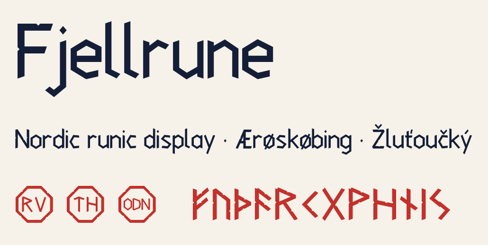

Fjellrune is an angular Nordic display typeface in which every letter, figure, symbol, and rune is built from straight, blade-cut strokes with chamfered terminals and mitred vertices. Every long stroke carries the family's signature "axe nick"—a small triangular notch cut into the stave.

Lowercase letters sit on a compact 480-unit x-height with six-sided faceted bowls, pairing naturally with the 700-unit capitals and figures. Typing one to three letters between < and >, such as <RV> or <TH>, sets them as a single octagonal rune-shield medallion via OpenType contextual alternates.
Fjellrune covers Google Fonts' Latin Core character set (the Latin languages of Northern, Western, Central, and Eastern Europe) alongside the Elder Futhark & Nordic Runic block (U+16A0–U+16F0). It is designed for headlines, jerseys, posters, badges, and display typography at 28 px and up.
To contribute, see github.com/q78717/font-fjellrune.